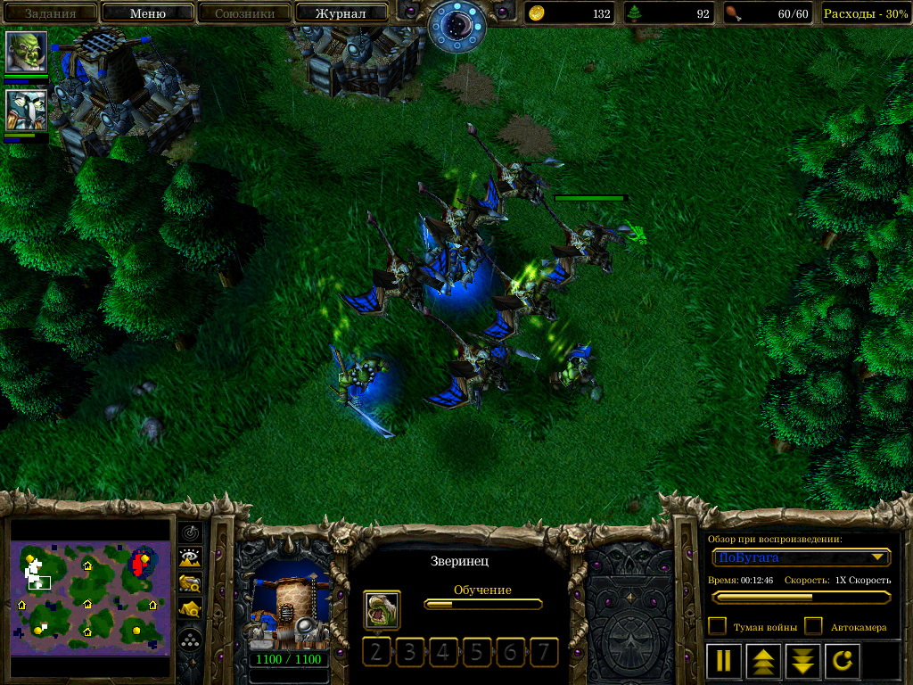
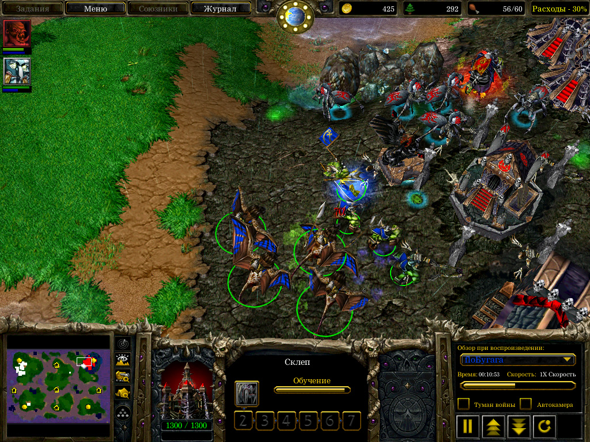

Это реконструированный сайт topw3.narod.ru | Харьков 2005-2007


Orc-vs-Undead Нестандартные стратегии: виверны—vs—пауки
Undead—vs—Undead Данная, довольно необычная, стратегия орка направлена на борьбу с андедом играющим по стандарту. Итак, стратегия предусматривает использование виверн и предусматривает два различных варианта применения.
1. Вариант первый, стандартный первый герой орка- ФС, стандартный крипинг, можно для разнообразия похарасить андеда. После завершения грейда на второй таер, сразу заказывается шаманник, зверинец, а потом, как можно быстрее, грейд на третий таер. В зверинце штампуются виверны, которые не выходят с базы. Желательно, чтобы до получения шаманами мастер класса андед вообще их не обнаружил. Герой крипится отдельно от своей армии, либо вместе с андедом ?. Сразу после окончания грейда на тиер-3 заказывается апгрейд на «высшее посвящение шаманов». В момент финалки у вас должно быть не меньше 8-ми виверн 5-8 шаманов мастер класса. Что касается второго героя, то здесь возможны варианты, которые различаются в зависимости от используемой андедом контры к вашим действиям. Первым является использование фаер лорда, в том случае если андед формирует армию гаргулий. Элемы послужат отличным подспорьем против гарг, неплохо будет так же достроить пару камикадзе. Второй вариант, использование вторым героем ТС, в том случае если андед формирует армию из пауков. ТС качает топот, который кастует забежав в толпу пауков. И не забудьте купить для ТС бутылку жизней или инвул. Противопоставить этой тактике что либо, для андеда является более чем сложным заданием…
2. Вторым вариантом является использование в качестве первого героя БМ-а (блэйд мастера). Основной задачей является постоянный харас и крипджек, что не даст андеду возможности получить преимущество на ранней стадии игры. На базе делается тиер-2 без всякого барака, ведь главной задачей является как можно более быстрый выход в виверн. Если андед окажется недальновидным, то вы имеете шанс закончить партию уже на этой стадии перебив всех пауков пока у них еще нет сетки, или же заставив андеда потратить астрономическое количество ресурсов на массовые башни. В противном случае вы постоянно харасите андеда, фактически не давая ему выйти с базы. При удачных ситуациях сносите недостоившиес здания андеда или же шахту. Вторым героем как правило используется таурен, который крипится отдельно, с упором в прокачке в топот. Делаются апгрейды вивернам на броню. В момент финалки ситуация повторяется: таурен забегает в толпу пауков и делает топот, а виверны фокусом убивают их. В данной варианте обязательна покупка порошка просветления, ибо пауки закапываясь могут свести на нет все ваши начинания.
З.Ы. Не забывайте, что топот действует не только на пауков но и на героев, потому смотрите по ситуации. Зафокусить и убить героев андеда будет отнюдь не трудно! Удачных игр…

Масс виверн- залог успеха данной страты

Фокус- через секунду Лич будет уже мертв, койл даже не успевает долетать. =)